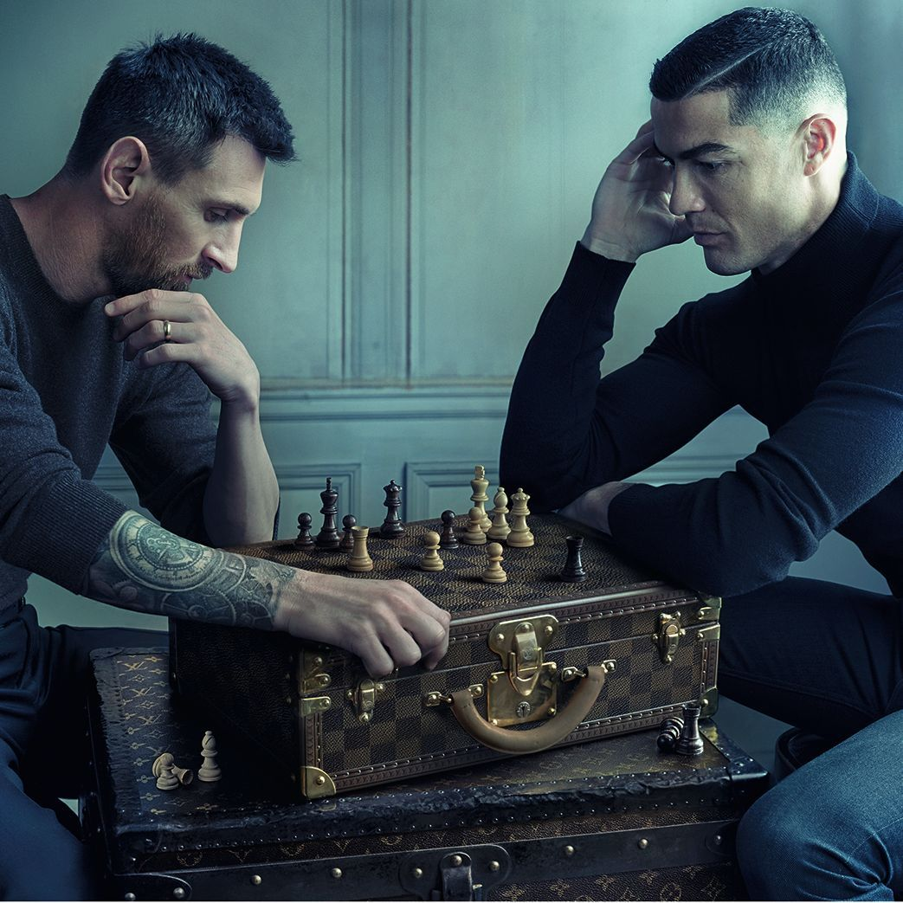

世界杯经典营销 32 案
这部分主体是历届经典，另收录少量已形成代表性的 2026 当届标杆，作为跨届创意训练库。它保留情绪入口、品牌连接、整合结构、记忆点、可借鉴方法与不可照搬风险，用来回答：为什么有些世界杯营销能从一次动作沉淀为长期方法？
资料分区原则：2026 案例页以当届事实、素材和结果证据为主；经典页以创意方法和整合结构为主。若当届动作同时入选经典方法库，也不会重复计入 2026 案例数量。
2002

2006

2010

Write the Future：把一次触球拍成整段人生
Nike · 非官方/球队与球星资源
一记解围、一次失误或一脚进球，在数秒内把球员带入完全不同的人生：德罗巴避免内战、鲁尼从全民偶像跌入低谷后重新崛起、C 罗被立雕像并走进电影。影片把世界杯的真正压力拍成“每次触球都可能改写未来”，而不是简单堆砌球星。

三段伟大旅程，一场传奇桌上足球
Louis Vuitton · 非官方借势 / 世界杯奖杯箱合作背景
让贝利、马拉多纳和齐达内三位 10 号在马德里小酒馆围着桌上足球较量，用一张安妮·莱博维茨照片把三段人生旅程压缩为“一场历史比赛”。

Star Wars Cantina：把世界杯搬进遥远星系
adidas Originals · FIFA 官方赞助体系 / Star Wars 联名授权
在《星球大战》酒吧原始镜头中加入贝克汉姆、贝肯鲍尔、Snoop Dogg、Daft Punk 等人物，让不同宇宙的明星挤在一起看世界杯。
2014

Risk Everything：用内容战役反超官方赞助商
Nike · 非官方/球队与球星资源
Nike 以“Risk Everything”反对安全、可预测的足球：从球星背负国家期待，到《Winner Stays》街头对决，再到五分钟动画《The Last Game》让真实球星反击只会执行“安全算法”的克隆人。

Galaxy 11：梅西带领地球明星队迎战外星人
Samsung · 非官方赛事赞助 / 全球球星资源
把梅西、C 罗、鲁尼等 11 位球星组成“Galaxy 11”，通过训练、招募和终极比赛保卫地球，把手机新品发布包装成一部长达八个月的足球科幻连续剧。

GOL!：普通人的不可能进球
McDonald’s · FIFA 世界杯官方赞助商
让孩子、老人、上班族和穿高跟鞋的女性完成跨街道、钟楼、扶梯和船只的不可思议射门，同时把世界杯薯条盒变成可扫描的增强现实足球游戏。

The Game Before the Game：把赛前仪式变成产品场景
Beats by Dre · 非官方/运动员资源
五分钟影片从内马尔赛前接到父亲电话开始，进入球员、球迷和音乐人的私密准备：祈祷、缠绷带、独处、听歌、走入球场。产品不解释音质，而是出现在比赛开始前最需要集中和隔绝噪音的时刻。

Flipbook Goal：24 小时画完范佩西鱼跃冲顶
STABILO · 非官方实时借势
范佩西对西班牙打入鱼跃冲顶后，STABILO 团队在 24 小时内用纸笔逐帧重画进球、制作翻页动画，并配上比赛原声快速发布。

Fanhansa → Siegerflieger：让航班身份跟着赛果升级
Lufthansa · 非官方/国家队情绪
世界杯前，汉莎把多架飞机机身上的 Lufthansa 临时改为 Fanhansa，让真实航班变成移动媒体；德国夺冠后，接球队回国的飞机再升级为 Siegerflieger（胜利者航班），把赛果直接写进运输服务本身。

Because Fútbol: Avoidance——躲开全世界的剧透
Hyundai · FIFA 世界杯官方汽车合作伙伴
一名无法直播看球的父亲开车回家，一路躲避广播、路人、电子屏和球迷表情，想在完全不知道比分的情况下观看录像。

Do Us Proud：74 个人用头球唱完一首歌
The Sun · 非官方国家队助威
74 位来自不同年龄、性别和生活场景的英国人依次用头把球传下去，每个人球衣上的一个词对应歌曲歌词，最终拼成一支可以“看着唱”的世界杯助威片。
2018

Light Up Cups：让八百万只杯子听见欢呼
Budweiser · 官方啤酒赞助商
百威把普通啤酒杯变成声音感应媒介：观众欢呼和鼓掌越响，红杯闪烁越频繁。情绪不再只存在于声浪里，而是变成看得见、能带走的整场红色灯光。

“天生要强”：蒙牛把梅西、包装与渠道写进同一主题
蒙牛 · 官方赞助商
蒙牛在 2018 年成为 FIFA 世界杯全球官方赞助商，并以梅西为核心建立“天生要强”：球星面对质疑与坚持的故事负责情绪，全品类世界杯包装、门店陈列和渠道促销负责把口号带入日常消费。

Rainbow Russians：俄罗斯每进一球就为 LGBT+ 捐款
Paddy Power · 非官方借势
面对东道主俄罗斯的 LGBT+ 争议，Paddy Power 承诺俄罗斯队每进一球便向相关公益组织捐款一万英镑，让原本矛盾的人群开始“希望俄罗斯进球”。

法国队夺冠，华帝退全款
华帝 · 法国国家队官方赞助商
把法国队夺冠这一不确定赛果写进指定“夺冠套餐”的交易承诺：如果法国队夺冠，华帝退全款。
2022

Footballverse：让不同时代的球星同场对决
Nike · 非官方/球星资源
科学家争论姆巴佩和罗纳尔多谁更强，于是打开一座实验室，把小罗、C 罗、罗纳尔多、姆巴佩等不同年代的版本带到同一块球场。影片把球迷永远没有答案的跨时代争论，变成可以被看见的“足球宇宙”。

The Impossible Rondo：让五个时期的梅西同场传球
Adidas · 官方赞助商/装备权益
案例不是“梅西与其他球星踢笼式足球”，而是让五个世界杯时期的梅西在同一空间进行 Rondo 传抢：发型、球衣、身材和动作分别对应 2006、2010、2014、2018 与 2022。品牌把一个人的职业生涯拍成可互动的群像。

Believing Is Magic：把十届东道主装进可乐瓶
Coca-Cola · 官方合作伙伴
日本可口可乐以“Believing Is Magic”为主题，把十个历史东道主的文化元素做成世界杯限定瓶，并在《Street》广告里让街头球迷的相信与欢呼不断传递。

Bring Home the Bud：把临时禁酒危机改成冠军奖品
Budweiser · 官方赞助商/权益受限
卡塔尔在开赛前两天限制场馆售酒，百威没有只发声明，而是把“卖不掉的啤酒”改写为赛果承诺：获胜国家将得到这些库存，用于冠军庆典。运营挫折瞬间变成全赛事都能等待的悬念。

时空汉堡：把 2002、2014、2022 三届记忆叠在一餐
McDonald's · 官方赞助商
一名球迷在 2002 年购买世界杯限定汉堡，却意外穿越到 2014 和 2022；每到一个年代，门店、服装、手机和足球记忆都变化，但一份汉堡成为穿越线索。

Victory Is a State of Mind：梅西与 C 罗下棋
Louis Vuitton · 非官方借势 / 世界杯奖杯箱合作背景
让梅西和 C 罗在 Louis Vuitton 棋盘格旅行箱上下棋，把两位球王的长期竞争从球场转译成一场安静的战略对弈。

阿根廷夺冠后的三种品牌承接
伊利 / 极兔速递 / adidas · 国家队合作 / 球星代言 / 官方装备资源
阿根廷夺冠后，品牌不只发布祝贺海报：伊利把结果做成蓝白限量商品，极兔用梅西全球品牌大使关系表达长期陪伴，adidas 则用五届世界杯时间线和迪拜 3D 户外把圆梦升级为品牌故事。
2023
跨届平台

FIFA World Cup Trophy Tour：把奖杯变成全球移动媒体
Coca-Cola · 官方长期合作伙伴
可口可乐把只能在决赛场上远观的世界杯原版奖杯送到各国，让球迷近距离观看、合影并参加本地活动；品牌不是复刻一座奖杯，而是经营真品移动所产生的稀缺感。

Airport ’98：把巴西队困在机场里踢球
Nike · 非官方赞助 / 巴西国家队与球员资源
让罗纳尔多、罗马里奥、罗伯托·卡洛斯等巴西球星在无聊的机场候机厅即兴踢球，把顶级球员还原成一群只要有球就会玩起来的孩子。

海信：从场边露出走进 VAR 与赛事运行
Hisense · 官方赞助商
海信从 2018 年开始连续赞助世界杯，路径不再停在场边围挡：先用全球转播建立品牌认知，再把电视与家庭观赛场景绑定，2026 年进一步让 RGB MiniLED 显示进入 VAR Review TV 与国际广播中心等专业流程。

Pepsi Football Stars：把球星变成长期娱乐 IP
Pepsi · 非世界杯官方赞助 / 全球球星、音乐与足球文化资源
百事没有把跨届足球营销做成不断更换球星的广告合集，而是持续经营一套“球星也会玩”的娱乐语法：2014 年让梅西等球星进入里约街头音乐片，2018 年用彩色足球、艺术家视觉和限量包装把球场扩展到城市，2022 年把穿裆技巧拍成《Nutmeg Royale》动作电影，2026 年再升级为讨论球迷规则与日常仪式的 Football Nation。
2026 当届标杆

《野场传说》：有球的地方，就有球王
adidas · FIFA 官方合作伙伴 / 全球足球与球星资产
从甜茶组队挑战一支三十年不败的社区野球队展开，让齐达内、皮耶罗、贝克汉姆等传奇成为口述传说中的失败者，把世界杯的顶级光环重新交还给每一块有人踢球的空地。

联想：从顶级赞助身份到赛事 AI 技术底座
Lenovo · 官方技术合作伙伴
联想不是只在赛场摆放 Logo：作为 FIFA Partner 与官方技术合作伙伴，它把计算设备、数据和 AI 能力接入赛事准备、广播与裁判视角等流程，再用场边 LED 和场馆大屏把后台交付翻译为全球观众能识别的合作身份。

“山蒙海誓”：蒙牛 × 海信围挡互推
蒙牛 / 海信 · 两家 FIFA 世界杯全球官方赞助商共创
两家官方赞助商不再各说各话，而是把彼此品牌名写进自家围挡文案；用户自发命名“山蒙海誓”后，再用 2.0 文案和社交内容把一次转播同框做成连续剧情。